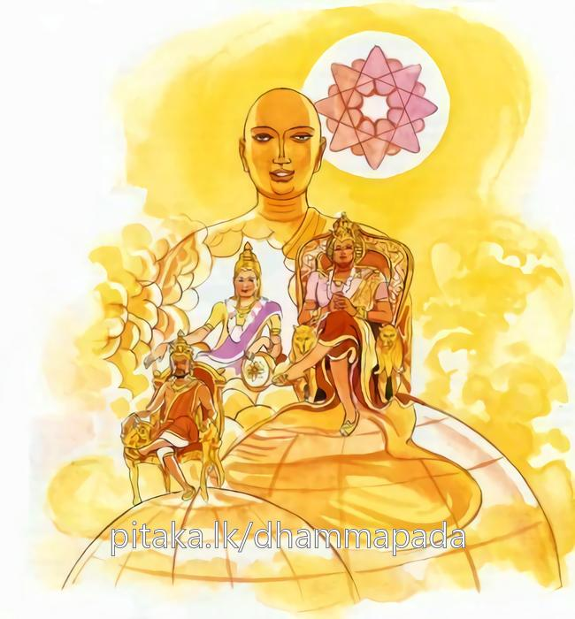

13-11 අනේපිඬු සිටුගේ කාල නම් පුතණුවන් පිළිබඳ කථා පුවත
මෙම කතාව සද්ධර්ම සාගරයෙන් ද කියවන්න.
පථව්යා එකරජ්ජෙන සග්ගස්ස ගමනෙන වා
සබ්බලොකාධිපච්චෙන සොතාපත්තිඵලං වරං.
මුළු පොළොවෙහි සක්විති රජ ඉසුරට වඩා (සවිසි වැදෑරුම්) ස්වර්ගයට යෑමට ද වඩා, (නාගලෝකාදිය සහිත) මේ සියලු ලෝකයෙහි අධිපති බවට ද වඩා සෝවාන් පලය ම උතුමි. මෙ තෙක් තැන අධිපති කොටත් සත්ත්ව තෙම අපායෙන් නො මිදුනේ ම වෙයි. සෝවාන් පුඟුල් තෙම අපායෙක නො උපදී. අට වන භවයක් නො ලබයි. එහෙයින් මුළු ලොව ම අධිපති බවට වඩා සෝවාන් ඵලය උතුමි.

"පථව්යා එක රජ්ජෙන” යන මෙම ධර්ම දේශනය ශාස්තෲන් වහන්සේ සැවත ජේතවනාරාමයේ වැඩසිටිය දි අනේ පිඬු සිටුවරයාගේ පුත් කාල නම් සිටුපුතා නිමිති කරගෙන දෙසුහ.
මේ සිටුවර පුතා ඉතා ශ්රද්ධාවත් සිටුවරයාගේ පුතා වුවත් බුදුන් වෙත යාමටත් සිටු මැදුරට වැඩමකළ විට භික්ෂූන් දැකීමට හෝ ධර්මය ඇසීමටත් සංඝයා වහන්සේට වතාවත් කිරීමටත් කැමති නොවීය. පියා විසින් දරුව මෙසේ නොකරන්නැයි පැවසුවද ඔහුගේ වචනය පිළිගත්තේ නැත. ඇහුම්කම් නොදෙයි. මේ නිසා පියා මෙසේ සිතුවේය. මෙබඳු දෘෂ්ටියක් ඇතිව හැසිරීමෙන් අවීචි පරායණ වන්නේය. මෙය මට සුදුසු නොවේ. මා බලා සිටියදී මගේ පුතු නිරයට යාම නොගැළපෙයි. මෙලොව ධනය දීමෙන් නොකළ හැකි දෙයක් හෝ කෙනෙක් නම් නැත. ධනය දීමෙන් වෙනස් කරමියි ඉක්බිති සිටුවරයා ඔහුට මෙසේ කීවේය. දරුව පෙහෙවස් සමාදන්වී විහාරයට ගොස් ධර්මය අසා එන්න ඔබට කහවණු සියයක් දෙන්නෙමි.
පියාණනි, ඔබ දෙන්නේද දෙන්නෙමි පුත- ඔහු තෙවරක්ම ප්රතිඥා ගෙන පෙහෙවස් සමාදන් වීමට විහාරයට ගියේය. ඔහුට ධර්මය ඇසීමෙන් ප්රයෝජනයක් නැත. පහසු ඇති තැනක නිදාගෙන උදයේම නිවසට ගියේය. අනතුරුව පිය සිටුවරයා මගේ පුතා පෙහෙවස් සමාදන් වී යයි වහ වහා ඔහුට කැඳ ආදිය දෙන්නැයි කියා දුනි. හේ කහවණු නොගෙන ආහාර නොගනිමියි ගෙන ආ සියළු දේ ප්රතික්ෂේප කළේය. අනතුරුව පියාණන් පීඩාව අකමැති වන්නේ කහවණු පොදිය දුන්නේය. ඔහු එය අතින් ගෙනම ආහාර ගත්තේත්ය. අනතුරුව දෙවැනි දිනයේදී සිටුතුමා පුත ඔබට කහවණු දහසක් දෙන්නෙමියි බුදුන් ඉදිරියේ සිට එක දහම් පදයක් ඉගෙන එන්නැයි යැවීය.
ඔහුද විහාරයට ගොස් බුදුන් ඉදිරියේ සිට එකම පදයක් ඉගෙන පළා යාමට සිතුවේය. ඉක්බිති තථාගතයන් වහන්සේ සිහියේ නොරඳන ලෙසට කටයුතු යෙදිය. ඔහු පළමු පදය නොසලකා දෙවැනි පදය ගන්නෙමියි. සිතා ඇසුවේය. ගනිමියි සලකා සිටිම සකසා මැනවින් ඇසීමක් නම් වෙයි. මෙලෙස අසන විට සෝවාන් ආදී මාර්ග ඵලයන් ලබා දෙයි. හෙතෙමේද උගනිමියි ඇහුම්කන් දෙයි. ශාස්තෲන් වහන්සේද, ඔහුට මතක නො සිටින සේම කරයි. හෙතෙම මතු පදයම උගනිමියි අසත්ම, සෝවාන් පෙලෙහි පිහිටියේය. ප්රමුඛ සංඝයා සමගම සැවතට පිවිසියේය. මහ සිටුවරයා එය දැක අද මගේ පුතුගේ ස්වරූපය ප්රියවේ. යයි සිතුවේය. ඔහුටද මෙසේ සිතුනි. අහෝ මගේ පියා අද බුදුන් ඉදිරියේ කහවණු නොදේද? කහවණු නිසා මම පෙහෙවස් සමාදන් වූ ආකාරය පවසයිද එහෙත් බුදුපියාණන් වහන්සේ බෙහෙවින් කහවණු නිසාම ඔහු පෙහෙවස් සමාදන් වු ආකාරය දැනගත්හ.
මහ සිටුවරයා බුද්ධ ප්රමුඛ සංඝයාට කැඳ පිළිගන්වා පුතුට ද ප්රදානය කරවීය. ඔහු වාඩිවී නිහඩව කැඳ පානය කළේය. කෑ යුතු දෑ කා බත්ද අනුභව කළේය. මහසිටුවරයා බුද්ධ ප්රමුඛ මහා සංඝයාට දන් පිරිනමා අවසානයේ පුතණුවන් ඉදිරියේ දහසක් බැඳි පියල්ල තබා දරුව මම ඔබට කහවණු දහසක් දෙන්නෙමියි කියා පෙහෙවස් සමාදන් කරවා විහාරයට යවන ලද්දේය. මේ ඒ පොරොන්දු වූ දහස ගන්නැයි පැවසුවේය. පුතා බුදුන් ඉදිරියේ කහවණු දෙන විට ලජ්ජාවූයේ මට කහවණුවලින් වැඩක් නැතැයි පවසා ගන්නැයි බලකරද්දීත් නොගත්තේය. අනතුරුව පියා බුදුන් වැද ස්වාමීනි අද මගේ පුතාගේ රූපය ප්රසන්න යැයි කියා මහ සිටුවරය හේතුව කුමක්දැයි ප්රශ්න කළ විට ස්වාමීනි මොහු පළමුදින කහවණු සියයක් දෙමියි කියා විහාරයට යැවුවිට - පසුදින කහවණු අතට ගන්නා තුරු ආහාර නොගත්තේය. අද මම දෙන විටද නොගනී. එසේය සිටුවරය. අද ඔබේ පුතුට සක්විති සම්පත දෙලොව බඹලොව සම්පත්තියටත් වඩා සෝවාන් ඵලයම ශ්රේෂ්ඨ යයි පවසා මේ ගාථාව දේශනා කළහ.
මහ පොළව අදිපති -අගරජ කමට වැඩියෙන්
දෙදෙලොව අදිපති සක් දෙවි කමට වැඩියෙන්
සෝවාන් ඵලයම - උතුම්මයැ සව් සත්නට
"මේ මහ පොළවේ අධිපති රාජ්යයන් දිව්යලෝක ගමනටත් මුළු ලොවම අධිපති බවටත් වඩා සෝවාන් ඵලය වඩාත් වැදගත් වේ.
එහි පථව්යා එකරජ්ජෙ යනු - සක්විති රාජ්යයයි. සග්ගස්සගමනෙන සවර්ග ගමණ විසිහය ආකාර හෝ දිව්යලෝක ගමන අදහස් කරයි. සබ්බලෝකාධිපච්චේන සවර්ග - නාග - සුපර්ණ - වෛමානික ප්රේත ලොව සමග සියළු ලොව අධිපති බවට වඩා සොතාපතති ඵලං වරං - සෝවාන් ඵලය උසස් බව රජ තනතුරු ලැබුණද නිරය උපත නොවැළකෙයි. සෝවාන් වූ විට අටවැනි භවයක් ඇති නොවේමය ඒ නිසා උතුම්මය.
දේශනය අවසන බොහෝදෙන සෝවාන් ආදී මාර්ග ඵලයන්ට පැමිණියහ.
ලෝක වර්ග වර්ණනාව නිමි.
දහතුන් වැනි වර්ගය නිමාවිය